時間！精神！糧食！
當代科技、資訊快速進步、傳遞的社會中，人的時間感被迫加速和異化，為了使時間的價值達到最有效的利用，也許我們透過虛擬網路進行社交活動的模式比現實的互動分配到更多的時間。生活在這樣的速度層，面對面互動中特有的經驗與價值漸被忽略。然而，在偏離城市中心、蔓草比人多的環境，城市的加速感消失，生活的步調變得緩慢，時間的感受被拉長了，在有了更多空白的時間，安全帽上打到蟲子的次數比打招呼還多的環境裡，每個個體處於相對分散又孤立的狀態，我們被什麼拋開了嗎？以至於一個相遇或相處的片刻如此困難。
此參與式計劃以「交易」為基礎，依附於「咕福Good Food：藝術家食堂展│The Artists' Canteen: An Exhibition Project」展覽中的食物買賣機制，執行「以物易物」的概念，以「時間」交換「糧食」。參與者可以從藝術家提供的一百個有關精神滿足的選項中，挑選想與藝術家共同完成的事件，花費時間進行事件，並得到一份食物。藝術家設定的一百個選項為單一個人無法達成，或是有共同進行的必要因素，包含心理需求的因素。例如日常小事、冒險、遊戲、計畫、共同的目標、偉大的奇想......等。參與者在共享計劃的過程中，從現實的人際互動裡得到社會感，或脫離常軌白日夢般的經驗，也許參與者與藝術家的這段關係會像燃燒一根香菸般短暫，但在滿足進食需求之前，也讓我們在相聚的經驗中補充個體所需的精神糧食。
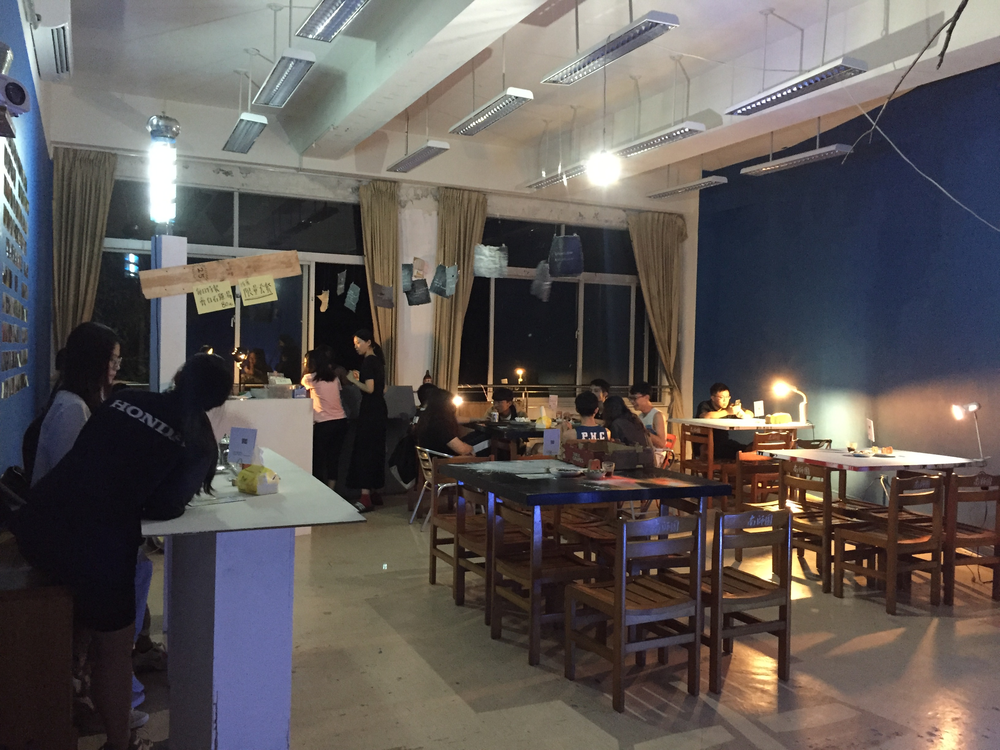
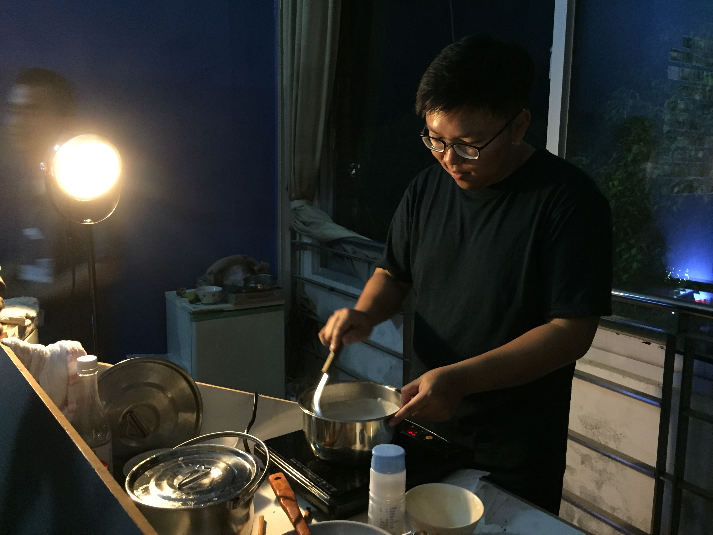
咕福現場


慶生
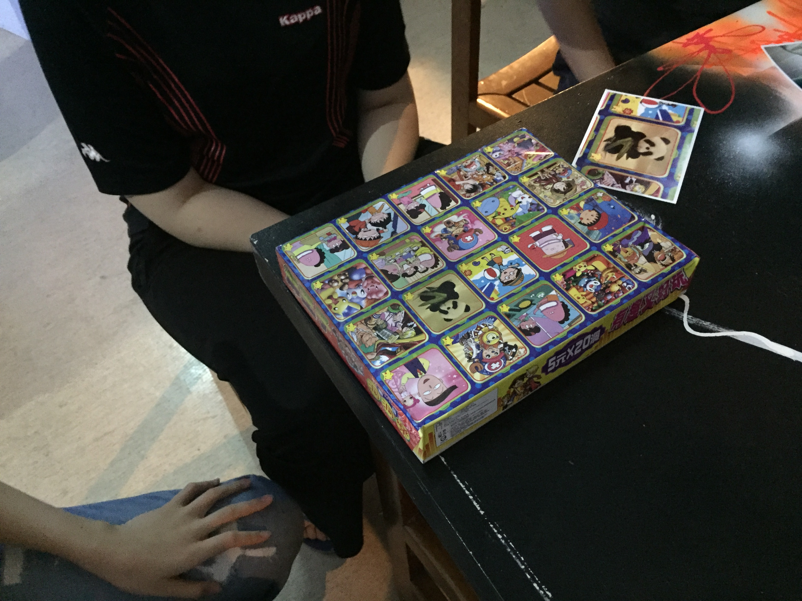
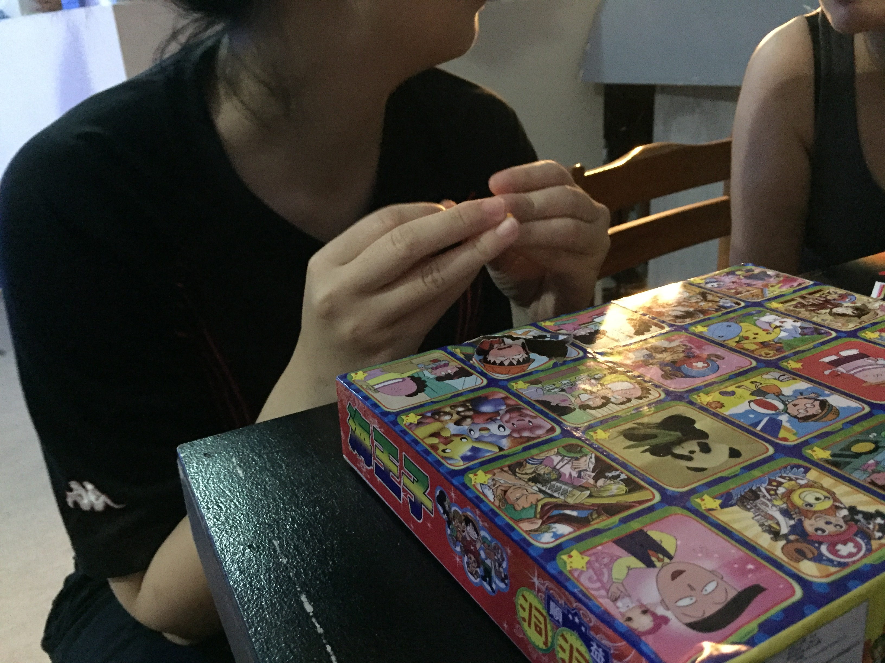
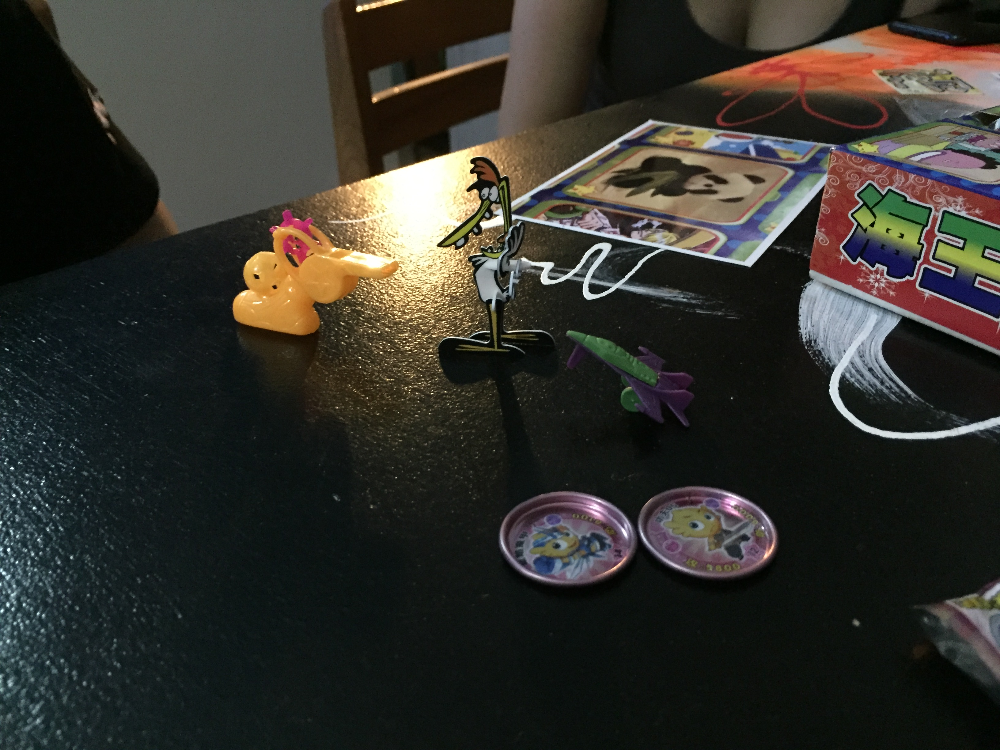
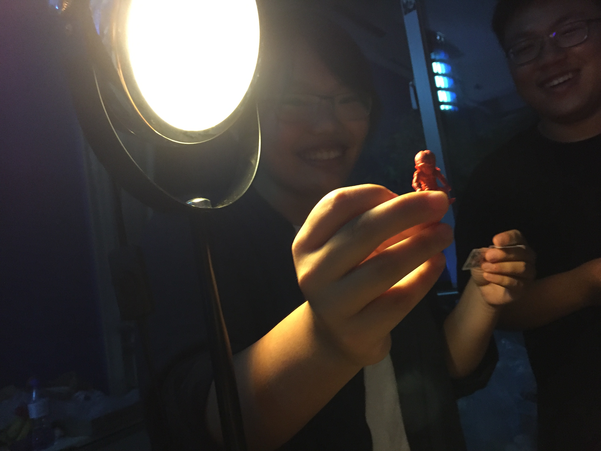
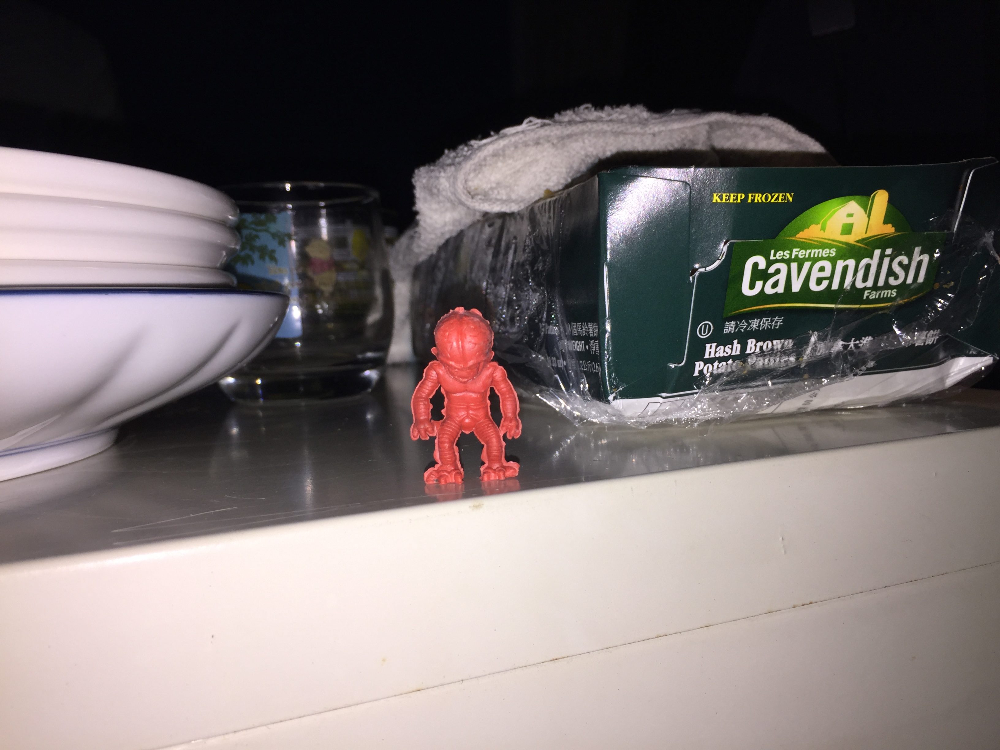
戳戳樂
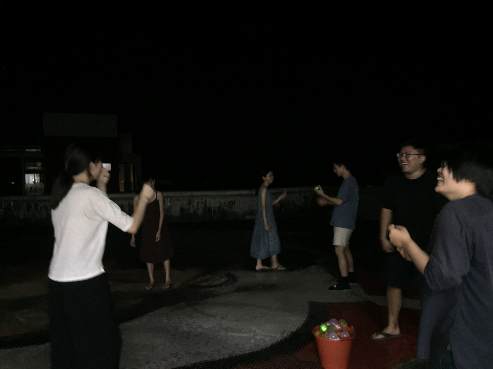
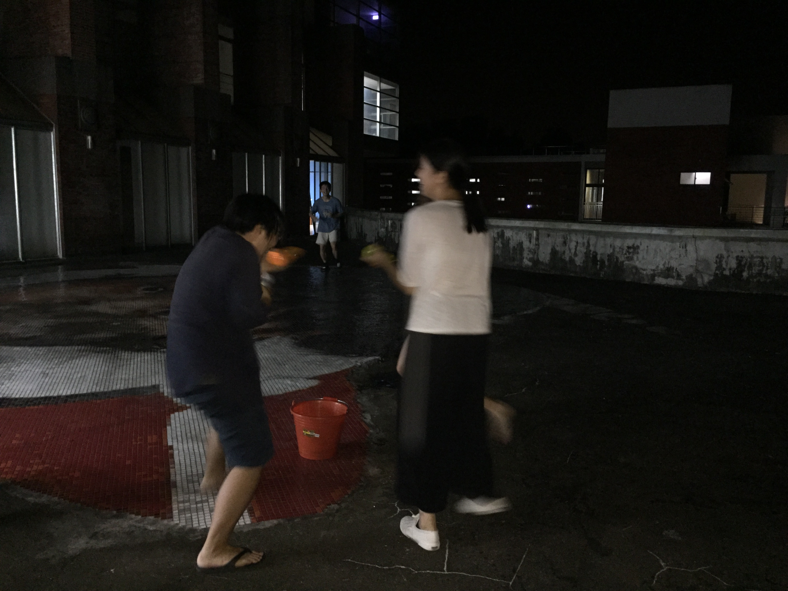
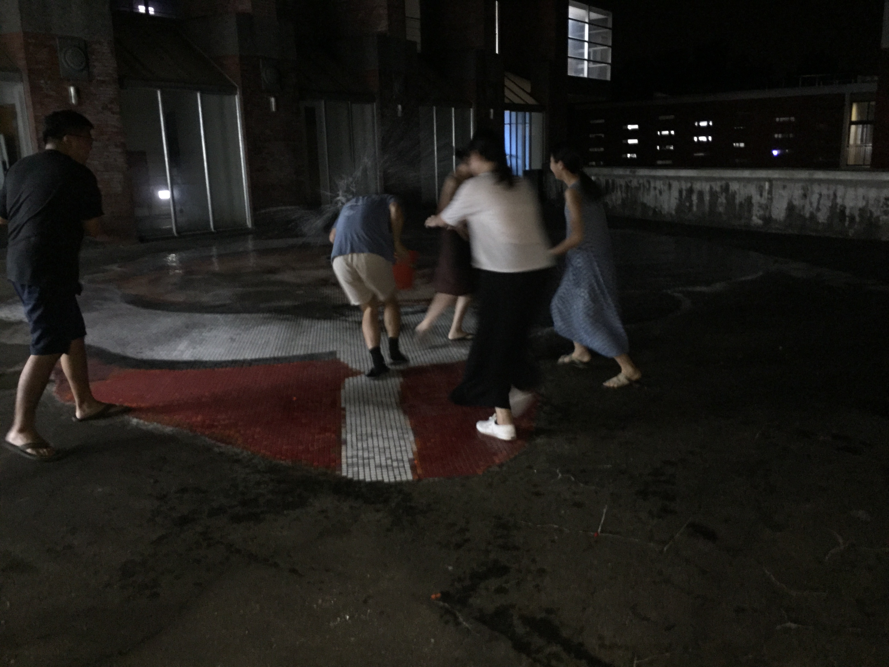
丟水球
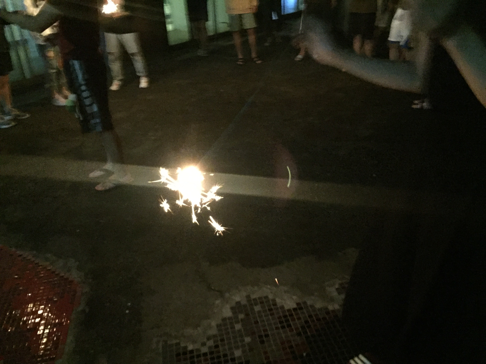
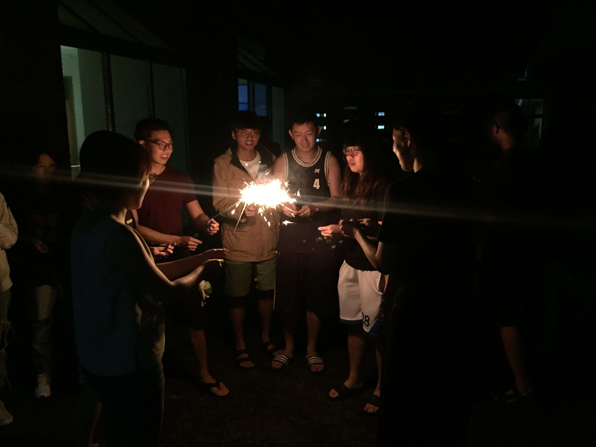
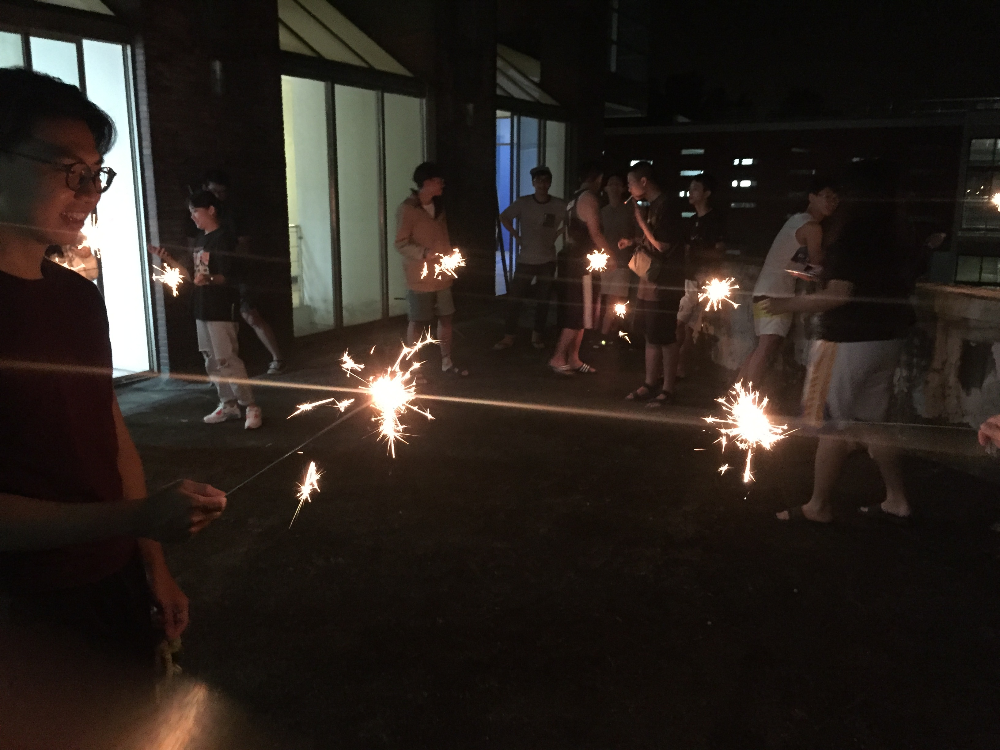
仙女棒